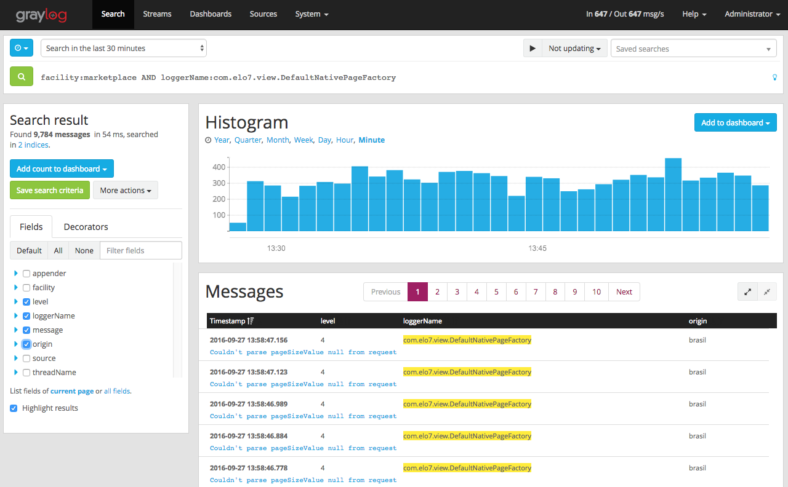
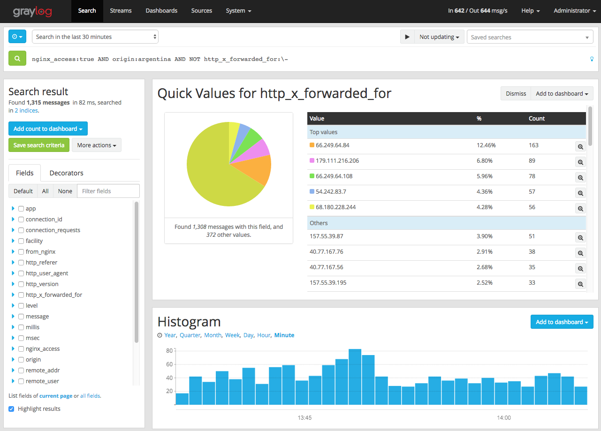
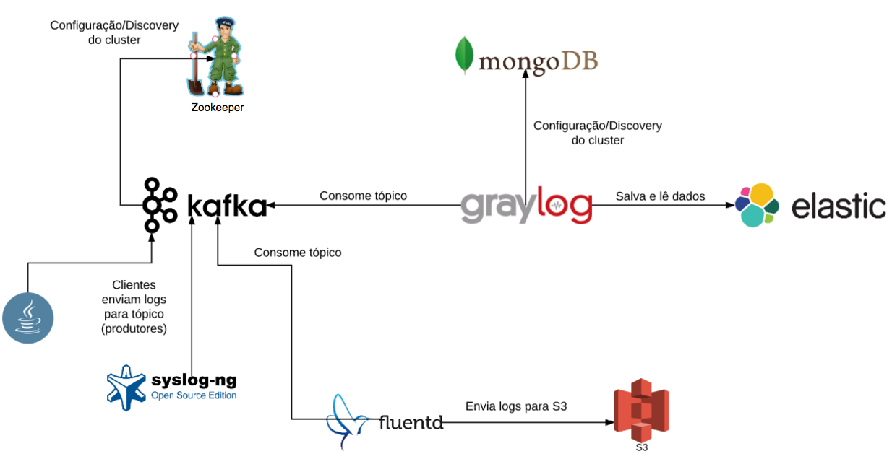

Gestão de logs
Publicado em:
@edsonmarquezani
Introdução
Aqui no Elo7 nós cuidamos de nossos logs assim como cuidamos das pessoas - com muito carinho. Como toda empresa de tecnologia, nós geramos centenas de milhões de linhas de log diariamente, a partir dos mais diversos tipos de sistemas. Isso implica imediatamente em um sério problema: como gerenciar esses dados, organizá-los, salvá-los e disponibilizá-los para consulta quando necessário? Além disso, como extrair significado deles em tempo real e dar visibilidade da saúde de nossos sistemas e dos eventos que ocorrem? É disso que vamos tratar nesse artigo.
Logs na era pré-Cloud
Logs sempre estiveram por aí, desde o momento em que o primeiro programa de computador foi criado. E, embora nem sempre tão estimados assim, eles são parte importantíssima de qualquer sistema, especialmente se você precisa diagnosticar um problema, coletar reatroativamente informações de uso ou execução, rastrear usuários, ou qualquer outra coisa que envolva saber o que seu programa fez de fato (e que você pode, ou não, ter previsto que ele faria).
Até pouco tempo atrás, o formato predominante de armazenamento e consulta de logs era o velho e bom arquivo texto e o acesso a eles costumava ser direto, conectando-se no próprio servidor (ambientes on-premise) e lendo seu conteúdo. Com o surgimento da computação em nuvem, especialmente soluções de plataforma e software como serviço, onde não se tem um controle direto da infra-estrutura, esse modelo tornou-se pouco prático ou até mesmo inviável. Soluções de centralização de logs, embora, de fato, já fossem adotados em ambientes on-premises de grande escala, tornaram-se algo obrigatório para essa nova realidade da computação em nuvem, ou Cloud. Nessa mesma linha, o surgimento e adoção de containers como forma de entrega das aplicações só reforça essa necessidade.
Servidores de logs
Como já mencionado, servidores de logs não são exatamente uma novidade. Alguns softwares bastante tradicionais como Syslog, Syslog-ng, Rsyslog, entre outros, vêm sendo usados como um centralizador de logs há muito anos, recebendo logs de múltiplas origens via rede ou localmente e gerenciando seu armazenamento, filtragem, repasse, entre outras coisas. Entretanto, esses sistemas, ainda assim, não atacam um aspecto muito importante do problema: a busca e visualização desses dados.
Nos últimos anos, tendo como ponto de apoio outras soluções de armazenamento e indexação de informações (como ferramentas baseadas no popular motor de busca Apache Lucene, por exemplo), algumas soluções mais completas de gerenciamento e visualização de logs surgiram, como Splunk e Graylog, que é um "concorrente" open-source do primeiro. Outras soluções, como Kibana, também são usadas para essa finalidade, embora não sejam focadas nesse tipo de aplicação prática.
Logs fora de série
Graylog
Aqui no Elo7, nós usamos o Graylog como gerenciador de logs já há algum tempo, com sucesso. Trata-se de uma solução bastante completa, possuindo, entre outras, as seguintes funcionalidades:
- suporte a ingestão de logs via rede em diversos protocolos (inputs);
- interface gráfica para consulta dos dados (incluindo suporte a criação de dashboards customizados);
- suporte a fluxos de filtragem e repasse dos eventos/logs (streams e outputs);
- suporte a módulos (para inputs, outputs, entre outras coisas).

Além de gerar logs em arquivo, nossas aplicações enviam os logs diretamente para o Graylog em alguns dos formatos suportados. Aplicações internas tendem a usar o formato GELF (um protocolo próprio do Graylog), pois temos a possibilidade de fazer essa customização. Já para aplicações terceiras de mercado, o syslog (o protocolo, não o serviço) tende a ser um formato mais suportado, e portanto utilizado. Por exemplo, o servidor web Nginx possui suporte a envio de logs em formato syslog nativo, sem necessidade de qualquer customização. Uma vez entregues, esses logs ficam disponíveis aos usuários para consulta a partir do Graylog por um período de tempo fixo, pré-estipulado, em dias.

Elastic Search e MongoDB
Embora gerencie toda a ingestão e visualização de dados, o Graylog não faz a persistência deles, delegando essa tarefa para um cluster de Elastic Search, que fica a cargo de armazenar, indexar e oferecer uma API de consulta para os dados, utilizado pelo Graylog para realizar as buscas dos usuários.
O Elastic Search é um motor de busca baseado no já mencionado Lucene, que oferece funcionalidades de particionamento, replicação, agregação dos dados, entre diversas outras. O Graylog cuida de criar os índices nele, rotacioná-los e purgá-los, tudo de acordo com a configuração definida pelo administrador.
O armazenamento de dados de configuração e runtime do Graylog ficam a cargo de um banco de dados MongoDB (que pode estar em modo replicaset ou standalone).
Melhorias
Ainda que a solução acima nos atenda satisfatoriamente, ela possui alguns pontos fracos:
- indisponibilidades do Graylog gera perda de eventos, que nunca mais são recuperados - os logs enviados durante o período de indisponibilidade são simplesmente perdidos;
- "sincronia" no recebimento dos dados - como o Graylog não controla a ingestão dos dados, um aumento abrupto na geração de logs o sobrecarrega de uma só vez, podendo derrubar o serviço, mesmo que trate-se apenas de um pico e logo em seguida o volume de logs volte ao normal;
- efemeridade dos dados - devido à necessidade de expirarmos os dados do Graylog (afinal, recursos têm limite), deixamos de ter um ponto central de armazenamento desses logs, voltando a depender dos velhos arquivos texto espalhados por diversas máquinas.
Kafka
Embora existam uma série de alternativas possíveis pra solução dos problemas citados acima, optamos pela inclusão de um elemento a mais nessa arquitetura, que resolve ou facilita a solução de todos eles de uma só vez - o servidor de tópicos Apache Kafka.
Kafka é, segundo a definição oficial, um servidor de commit-log distribuído, que oferece funcionalidades de replicação e particionamento. Na versão mais recente da nossa arquitetura, serve como ponto central da ingestão de logs, de modo que as aplicações possam enviá-los para um único local, e múltiplas fontes possam consumi-los. Além disso, serve como buffer dos dados, evitando a perda em caso de indisponibilidade de outros componentes mais suscetíveis a falhas, como Graylog e Elastic Search. Os dados nele também expiram, mas garantimos que fiquem disponíveis por tempo suficiente para que os outros sitemas possam se recuperar e zerar o atraso no consumo.
Dessa forma, isolamos a função de recebimento primário dos dados em um sistema altamente dedicado, conhecido por sua robustez, e que é totalmente independente do restante da arquitetura. O Graylog passa a consumir os dados que estão no Kafka, que são enviados pelas aplicações. Além disso, torna-se muito mais simples e eficiente escalar o serviço para suportar a carga necessária, uma vez que ele é bastante leve e simples, por ser altamente especializado. Ao Graylog é deixada apenas a função de enviar os dados para indexação e oferecer uma interface de consulta amigável aos usuários.
Diferente do Graylog, os dados disponíveis no Kafka são facilmente "legíveis" por outras aplicações, o que nos permite plugar nessa arquitetura outros componentes como, por exemplo, um agente externo que faz o arquivamento desses logs em um outro tipo de storage, como o Amazon S3. Foi exatamente dessa forma que atendemos uma das exigências do Marco Civil da Internet, que determina que as empresas preservem os dados de acesso e transações dos usuários por determinado período de tempo, para fornecer à Justiça, caso assim determinado. Assim como nesse caso, qualquer outro sistema que precise desses dados também poderia consumi-los de forma independente.
O desenho conceitual final da arquitetura fica como abaixo:

E você, como gerencia seus logs? Deixe um comentário abaixo!